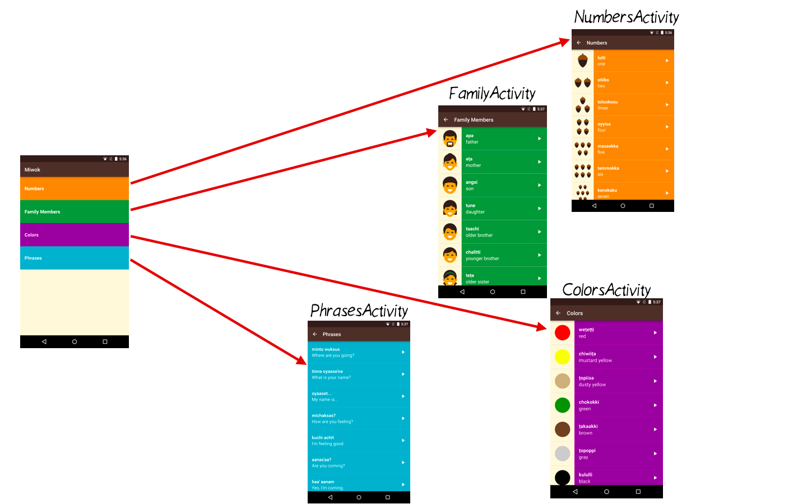
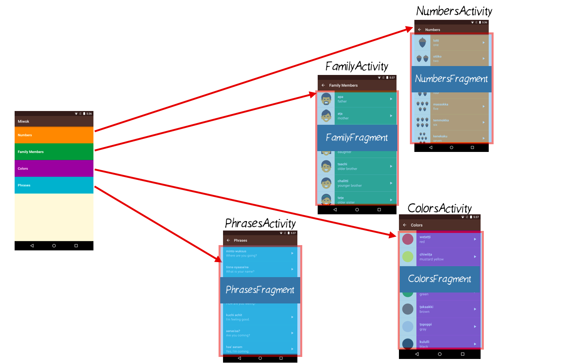
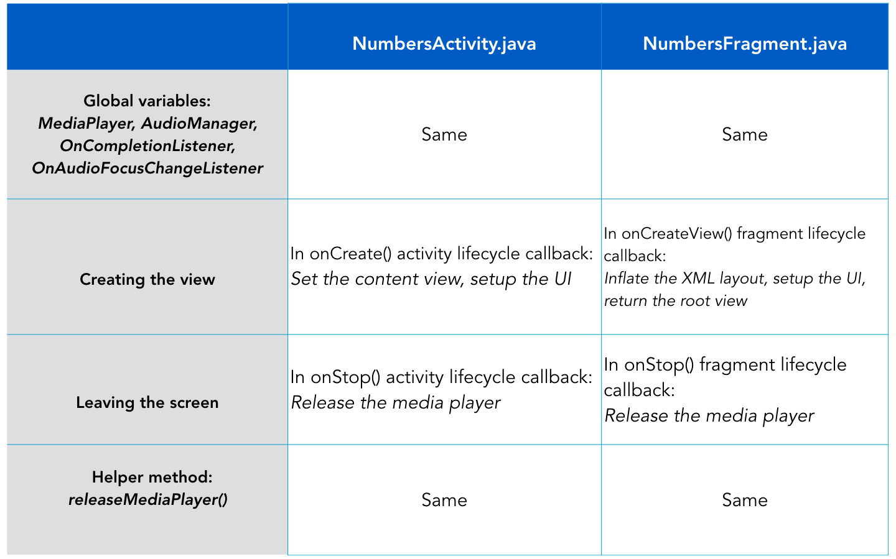
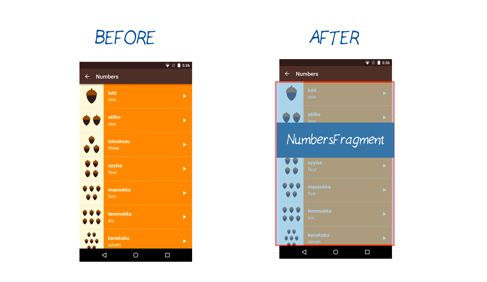
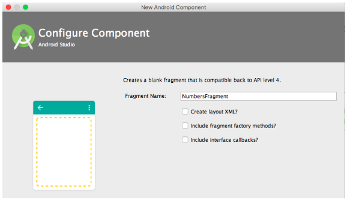
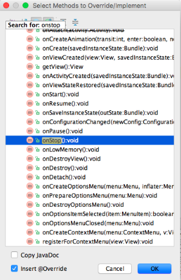
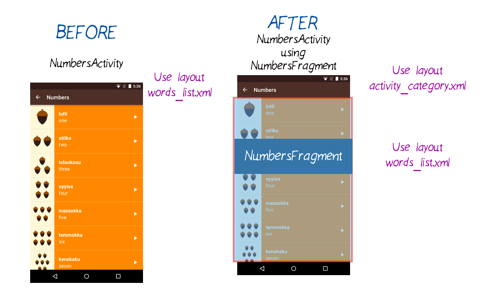

11. Refactor Category Activities
Step 2: Refactor the Logic for the Four activities to Use Fragments
Refactor Category Activities
Question:
We won’t use a ViewPager yet. Let’s prepare our fragments first. Currently, we have 4 category activities and 0 fragments.

By the end of this coding task, we want 4 category activities with 4 fragments. Each activity will contain a fragment.

In order to move the logic into the fragment java files, we’re going to have to copy/paste a lot of code. The code is mostly the same. However, any code that assumed we were inside an Activity class will have to be slightly tweaked to take into account that now the code is inside a Fragment class. For example, the Activity lifecycle callbacks (onCreate, onStop) don’t exist when we’re inside a Fragment class. There are similar methods though (onCreateView, onStop), so we just need small modifications to adjust to the Fragment lifecycle callbacks.

Don’t worry if the table is confusing. Let’s go step by step through the code changes for the NumbersActivity, and then hopefully the process will become clearer to you. As shown in the diagram below, we’re going to go from having a NumbersActivity (before state) to having a NumbersActivity with a NumbersFragment contained inside it (after state). Then for the upcoming quiz, you’ll convert the rest of the category activities on your own following the same process.

Create NumbersFragment class
1) To start, create a new Java file for the NumbersFragment. Right click on the “com.example.android.miwok” folder. Go to New > Fragment > Fragment (Blank).

2) Fill out the wizard. Give the fragment a name: NumbersFragment. Uncheck all the boxes because we’ll be adding code to the file on our own.

3) Android Studio will auto-generate a new Fragment class for you in a file called NumbersFragment.java. It will look something like this:
package com.example.android.miwok;
import android.os.Bundle;
import android.support.v4.app.Fragment;
import android.view.LayoutInflater;
import android.view.View;
import android.view.ViewGroup;
import android.widget.TextView;
/**
* A simple {@link Fragment} subclass.
*/
public class NumbersFragment extends Fragment {
public NumbersFragment() {
// Required empty public constructor
}
@Override
public View onCreateView(LayoutInflater inflater, ViewGroup container,
Bundle savedInstanceState) {
TextView textView = new TextView(getActivity());
textView.setText(R.string.hello_blank_fragment);
return textView;
}
}Copy code from the NumbersActivity and paste it into the NumbersFragment
4) Start by copying over the global variables from the NumbersActivity over to the NumbersFragment. (Delete them from the NumbersActivity as you do this.)
Code should look like this.
5) Copy over the releaseMediaPlayer() helper method from the NumbersActivity into the NumbersFragment.
Code code for releaseMediaPlayer().
Adapt the code for the Fragment Lifecycle (instead of the Activity Lifecycle)
6) Override the Fragment’s onStop() method.
You can’t copy the exact onStop() method over from the NumbersActivity because the Fragment onStop() method has a slightly different method signature. In case you’re wondering, the Activity class uses the “protected” modifier on the method, while the Fragment class has the “public” modifier on the method. But don’t worry about the details of those modifiers now.
Move your cursor to an empty space in the class, where you can add a new method. Use the keyboard shortcut Ctl + O to pop up a dialog and select a method to override. Type in “onStop” and when you find that result, hit OK.

Android Studio will automatically add this method to your NumbersFragment class for you:
@Override
public void onStop() {
super.onStop();
}Modify the onStop() method so that it calls the releaseMediaPlayer method:
@Override
public void onStop() {
super.onStop();
// When the activity is stopped, release the media player resources because we won't
// be playing any more sounds.
releaseMediaPlayer();
}7) Override the Fragment’s onCreateView() method.
The Activity’s onCreate() method is slightly different from the Fragment’s onCreateView() method. Within the Activity’s onCreate() method, we can call setContentView() to set the layout for the activity. In the Fragment, we need to inflate the view from the XML layout resource ID and return that view in the onCreateView() method. Note that the layout for the Fragment will use the word_list XML layout resource because it will be displaying a list of words.
@Override
public View onCreateView(LayoutInflater inflater, ViewGroup container,
Bundle savedInstanceState) {
View rootView = inflater.inflate(R.layout.word_list, container, false);
/** TODO: Insert all the code from the NumberActivity’s onCreate() method after the setContentView method call */
return rootView;
}Once you copy over the code from the NumbersActivity’s onCreate() method, you will get a bunch of errors in Android Studio because the code assumed that it would be run inside an Activity class, not a Fragment class. Below are instructions on how you would resolve each of these errors. If you don’t want to fix each error one by one, you can skip to the code snippet below that shows you what your NumbersFragment onCreateView() should look like when you’re done.
Error #1: You will get get an error saying cannot resolve method “findViewById(int)” because the Fragment does not have a findViewById method, whereas the Activity did have that method (see link).
ListView listView = (ListView) findViewById(R.id.list);
Fix the error by calling findViewById(int) on the rootView object, which should contain children views such as the ListView.
ListView listView = (ListView) rootView.findViewById(R.id.list);
Error #2: You will get an error saying cannot resolve method “getSystemService(String)” because the Fragment does not have access to system services, whereas the Activity does (see link).
mAudioManager = (AudioManager) getSystemService(Context.AUDIO_SERVICE);
Fix the error by getting the Activity object instance first. This is the Activity that encloses the current Fragment, which will be the NumbersActivity for the NumbersFragment. Then call getSystemService(String) on that Activity object.
mAudioManager = (AudioManager) getActivity().getSystemService(Context.AUDIO_SERVICE);
Error #3: There’s a problem with the arguments passed into the WordAdapter constructor because the first parameter “this” refers to this class (which is the NumbersFragment), and a Fragment is not a valid Context. However, the code used to work when “this” referred the NumbersActivity because an Activity is a valid Context.
WordAdapter adapter = new WordAdapter(this, words, R.color.category_numbers);
Fix the error by passing in a reference to the Activity that encloses this Fragment as the context.
WordAdapter adapter = new WordAdapter(getActivity(), words, R.color.category_numbers);
Error #4: When creating a MediaPlayer object, we need to pass in a context. Again, “this” refers to the NumbersFragment (and not the NumbersActivity), and the Fragment is not a valid Context.
mMediaPlayer = MediaPlayer.create(NumbersActivity.this, word.getAudioResourceId());
Fix the error by passing in the activity for the first input parameter.
mMediaPlayer = MediaPlayer.create(getActivity(), word.getAudioResourceId());
After fixing these 4 cases, there should be no more errors in this file! The NumbersFragment onCreateView() method should look like this.
As a sanity check, this is the end result of the NumbersFragment class.
Update NumbersActivity
8) Under the res/layout directory, create a new layout file called activity_category.xml. The important part is that the view has an ID. We chose to give the view an ID called “container”.
<?xml version="1.0" encoding="utf-8"?>
<LinearLayout xmlns:android="http://schemas.android.com/apk/res/android"
android:id="@+id/container"
android:layout_width="match_parent"
android:layout_height="match_parent"
android:orientation="vertical"/>9) Now we need to update the NumbersActivity to use the NumbersFragment, otherwise there will be duplicate code that does the same thing in both classes.
Replace the NumbersActivity code with this entire code snippet. We’re going to use this simplified activity that sets the activity_category XML layout resource as the content view. Then a new NumbersFragment is created and inserted it into the container view, using a FragmentTransaction (no need to understand the details of this now). Since the container has “match_parent” for width and height, the NumbersFragment will take up the whole width and height of the screen.
package com.example.android.miwok;
import android.support.v7.app.AppCompatActivity;
import android.os.Bundle;
public class NumbersActivity extends AppCompatActivity {
@Override
protected void onCreate(Bundle savedInstanceState) {
super.onCreate(savedInstanceState);
setContentView(R.layout.activity_category);
getSupportFragmentManager().beginTransaction()
.replace(R.id.container, new NumbersFragment())
.commit();
}
}10) To clarify, the NumbersActivity used to display the word_list.xml layout. Now, the NumbersActivity displays the activity_category.xml layout, and the NumbersFragment displays the word_list.xml layout.

Now the NumbersActivity is using a NumbersFragment! Run the app to make sure the numbers list still works. It should look the same because this is just a midpoint along the way to our goal, as explained earlier.
Great work! In the upcoming quiz, you’re going to repeat the same steps #1 - 9 for the other categories. All category activities can use the activity_category.xml layout resource.
At the end, your app should look the same, but each category activity will contain a different fragment. Test your app to make sure the right activity is showing the right fragment. Make sure each fragment has the right theme color. (These were both bugs in my app when I first implemented the solution.) Also ensure that the audio playback still works.
There’s a lot of copy/pasting, good luck!!
Start Quiz:
INSTRUCTOR NOTE:
For the quiz, clicking on each category will open up a new activity (see image here).
Note: All activities can use the activity_category.xml layout resource.